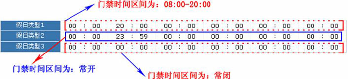

6.1 门禁时间段
时间段用于门的时间设置，可以指定读头仅在指定门的有效时间段可用，其他时间段不可用，也可以用于设置门的常开时间段；时间段可以用于设置门禁权限，指定用户只能在指定时间段访问指定门（含门禁权限组和首卡常开设置）。
系统按照门禁时间段的设置控制门禁。整个系统最多可以定义255个时间段。每个时间段内可定义一周内，以及三个假日类型的每天最多三个时间区间，每个区间为每天24个小时内的有效时间段。时间段的每个时间区间格式：HH：MM-HH：MM，即按照24小时制精确到分钟。
系统初始时默认会有一个名称为【24小时通行】的门禁时间段，此时间段可以修改，不可删除。用户可以新增门禁时间段，新增的门禁时间段可以被修改或删除。
6.1.1 新增门禁时间段
（1）、点击【门禁】 【门禁时间段】
【门禁时间段】 【新增】，进入新增门禁时间段页面，在此设置可能用到的门禁时间段：
【新增】，进入新增门禁时间段页面，在此设置可能用到的门禁时间段：

时间段名称：输入时间段名称（最多30个字符）。
备注：根据需要输入备注信息。
设置各时间区间的开始与结束时间（选中时间“00”，按退格键删除，再按数字键输入时间）
备注：对当前时间段的详细描述，包含当前时间段的解释以及主要应用的场合，方便用户本人或者其他相同权限用户查看时间段信息，最多70字符；
时间区间和开始、结束时间：一个门禁时间段包含一周内每天3个时间区间，以及三个门禁节假日的各三个时间区间，设置每个时间区间内的开始、结束时间；
-
设置方式：若时间段为常开，只需填写第一个时间区间为00:00-23:59，第二个区间和第三个区间均为00:00-00:00即可；若时间段为常闭：全都为00:00-00:00。如果用户只使用一个时间区间，那么只需填写第一个时间区间（如：常开），第二个和第三个时间区间使用默认值00:00-00:00。同理，当用户只使用前两个区间时，第三个区间使用默认值00:00-00:00；当用户使用两个或者三个时间区间时，需保证两个或者三个时间区间不存在时间的交集且时间不能跨天，否则系统将提示错误。
假日类型：时间段中的三种假日类型跟星期几无关，如果某个时间为某个假日类型，将按假日类型的三个时间区间。时间段中的假日类型为可选的，但是如果用户不填写，系统将以默认值写入。
 注意：设置时间区间的开始和结束时间时，请将输入法切换为英文输入法。
注意：设置时间区间的开始和结束时间时，请将输入法切换为英文输入法。
例如：假日类型1的门禁时间区间为8-20时，假日类型2的门禁时间区间为常开，假日类型3的门禁时间区间为常闭。

（2）、设置完成后，单击【确定】按钮，保存并返回门禁时间段页面，此时门禁时间段列表中将显示刚新增的门禁时间段。
6.1.2 门禁时间段维护
门禁时间段的编辑：在门禁时间段列表中，点击“相关操作”下的【编辑】按钮，进入门禁时间段修改界面，对已经设置好的时间段进行修改，修改后点击【确定】保存修改后的门禁时间段信息。
门禁时间段的删除：
-
 方法一：在门禁时间段列表中，点击“相关操作”下的【删除】按钮，进入时间段的删除确认页面，单击【确定】则删除该时间段。
方法一：在门禁时间段列表中，点击“相关操作”下的【删除】按钮，进入时间段的删除确认页面，单击【确定】则删除该时间段。 -
方法二：勾选门禁时间段列表中一个或多个门禁时间段前的复选框，点击列表上方的【删除】按钮，进入门禁时间段的删除确认页面，单击【确定】则删除选中的门禁时间段。
 注意：正在使用中的门禁时间段不能被删除。
注意：正在使用中的门禁时间段不能被删除。